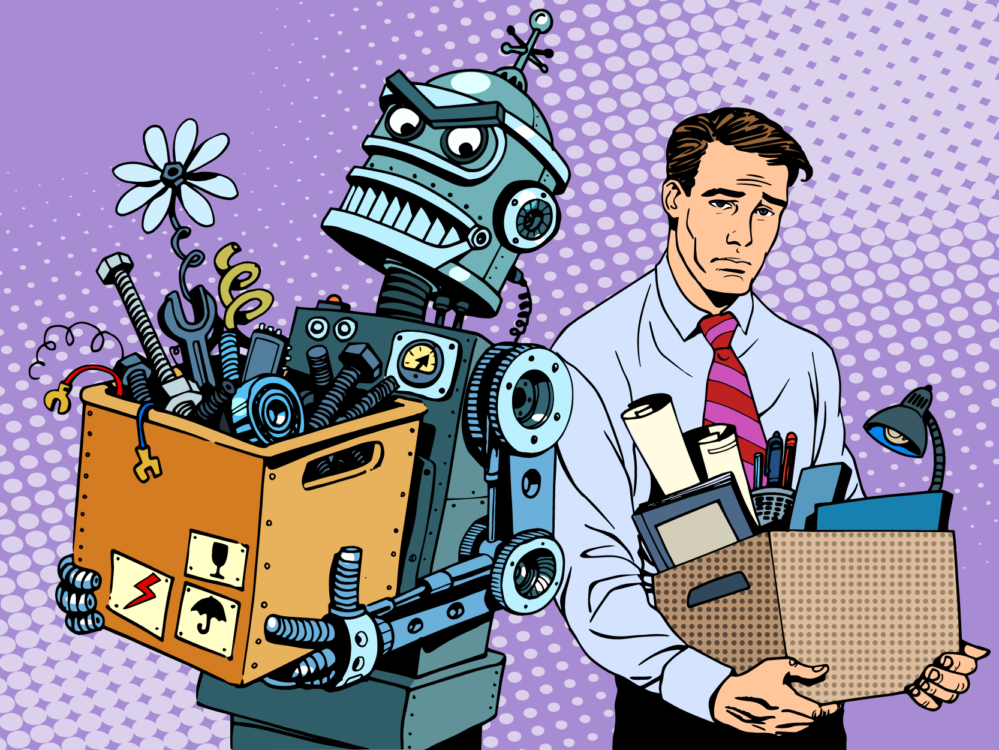
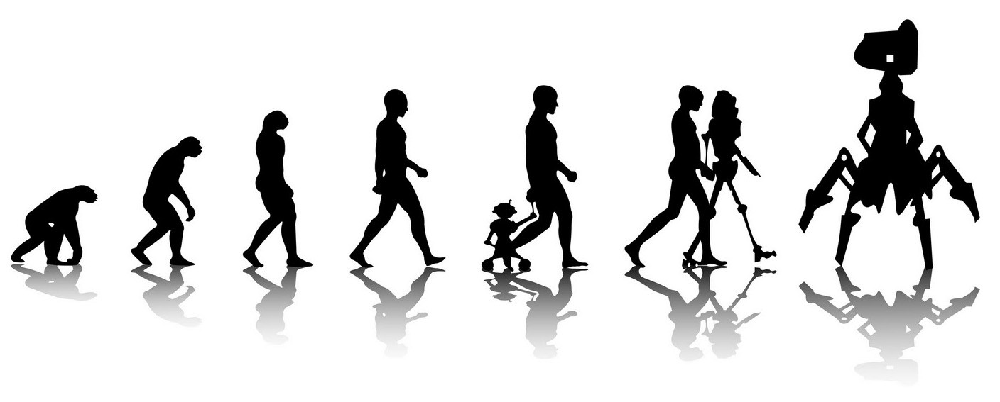

What is the future of the jobs of the millions out there in this Man vs Machine war?
Suppose you have recently watched a sci-fi movie like I, Robot, ex Machina, wall- E, Robocop and now you are in distress thinking about the impending dystopian future where robots or machines are taking over the world let alone your jobs.
Well, you are not alone in this matter, there have been countless debates and discussions on this topic and there will be more such pointless debates until the world will surely be taken over by these robots......Just kidding. No such thing will ever happen.
So when we talk about machines surely we think of AI (Artificial Intelligence), machine learning. In the context of our article, machines describe computers and computerized equipments, for example, robots, that have been programmed to learn and work, sometimes like humans.
Occasionally we refer to this as artificial intelligence (AI), some times we call this machine learning, and still other times we can call these robotics…or simply bots. And, yes, these all are technically different things but, within the broad discussion related to the future of jobs, these are totally interrelated and in fact, can be considered as one.
Robots doing all the jobs that required humans, In one way it has been very helpful to us as now we don't need to do manual labour and because of that companies, industries are saving tons of money but at the same time, one could say the unemployment rate is increasing because of the machine doing all the work. Can't say no to that too... Initially, labourers were required to do farming activities, in construction of bridges, homes but now most of these work is done by machines.
Rather than talking about future let's go a while back and ponder where are the PCO boxes, there were hundreds of them at every nook and corner. Gone off. I bet most of the millennials don't even know what that is. Fax machines-- one of the alternatives to letter used for sending and receiving small messages. People have abandoned it because of security issues. They are no longer in use because a better alternative has been found for them. Now we use mobile phones rather we would say smartphones to call anyone in the world (by the way PCOs were used for long-distance calls, millennials!!) and to send messages.
There are countless examples say farming equipments, Installation of robots in manufacturing industries reduced the cost of labour at the same time increasing productivity and income. Nowadays people don't want to go to shops to buy anything everything is at the touch of their fingers. You order something at night and you will have it at your doorstep by the time you will wake up in the morning. We can come to the conclusion that technology has been introduced to better suit the needs of humans or to make the work easier, decreasing workload and increasing creativity and productivity.
Increasing the productivity of the human mind by decreasing the workload was the main intention behind developing new technologies or machines or robots, whatever you would like to call it. Perhaps you would like to think that increase in technology will bring doom on us, maybe you are right if you do. However, there are some exciting examples where the opposite is also true. In one of the examples, we can say the best result will come if human and machines will work together. Amazon has currently employed more than 100,000 robots in its warehouses to efficiently move things around while it has increased its warehouse workforce by more than 80,000. While the humans, in Amazon, do all the picking and packing of goods, while the robots move orders around the giant warehouses, essentially cutting “down on the walking required of workers, making Amazon pickers more efficient and less tired.” Plus, the robots “allow Amazon to pack shelves together like cars in rush-hour traffic because they no longer need aisle space for humans. The greater density of shelf space means more inventory under one roof, which means better selection for customers.”
This example shows us how machines and humans can work together in the same environment. By the way, as people say, "Change is the only constant". With the change in technologies, people should also learn to adapt them in their day to day life. People should learn about technologies and how to use them. These technologies or machines are created by humans so saying that machines will conquer the world is a myth, because we need humans so that these machines can work properly as they are intended to and at the same time, we need humans to develop these machines as well.

So, Will machines take over many jobs? The answer is unequivocally, yes. But there will be an equal number of opportunities generated for humans to work. They can hone their skills that will be suited for the ever-growing technological world. In many ways human and machines will find themselves in a symbiotic relationship, helping each other do what they do best. Man and machine will surely continue to work together in the future as well......as they are doing so right now.
The future is the man working with the machine not man vs machine. The article published on VMware website in December 2018, states that As the world becomes increasingly digital, humans will reach the limit of our capacity to manage the amount of data being produced. You can see it in the criticisms of social networks not doing more to monitor harmful content, or in a statistic that says 60-73 per cent of collected data is never used for any strategic purpose.
AI is good at processing the information provided to it and making decisions according to the information. Why would we want to compete with something that could take every article published on a medical condition and use it to come up with a diagnosis? We can’t, so we shouldn’t even try to. What we should do is use that ability to augment our basic humanity to create value to things. That value might be reassuring a patient, it might be fixing a phone contract issue or it might be coming up with a new app. Whatever jobs it is, with the help of AI, we’ll be able to do it more effectively and more efficiently.
The artificial intelligence future is not at all about AI grabbing all our jobs but it's about letting AI do mundane work, so we can do the things only human beings are truly great at and also manage them.
To sum up, we would say that it is true many jobs will become obsolete or will be taken over by machines but at the same time, it will also generate new jobs. So one should just keep learning and adapting as the machines are doing.
Wanna reach out to us?